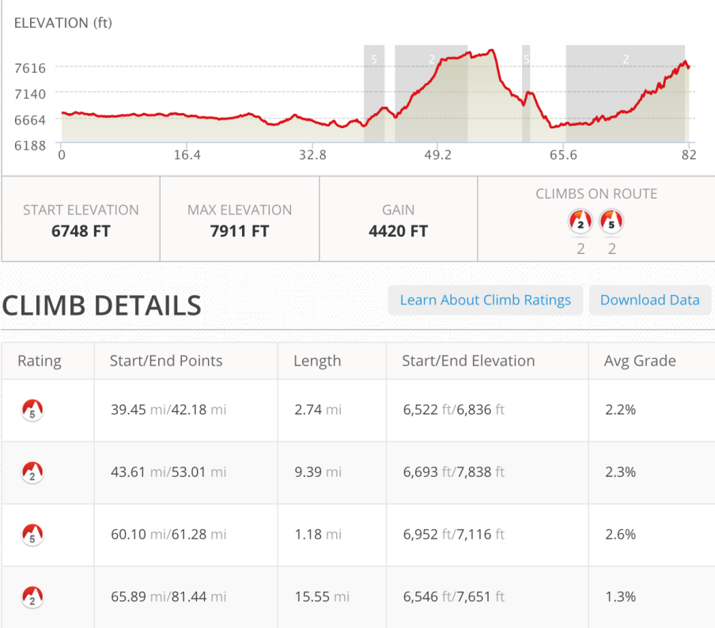
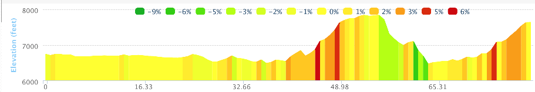
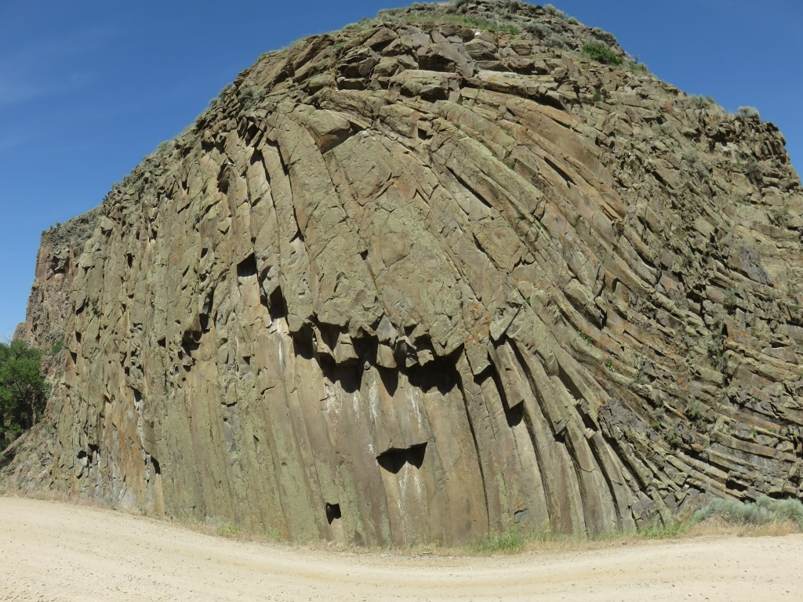
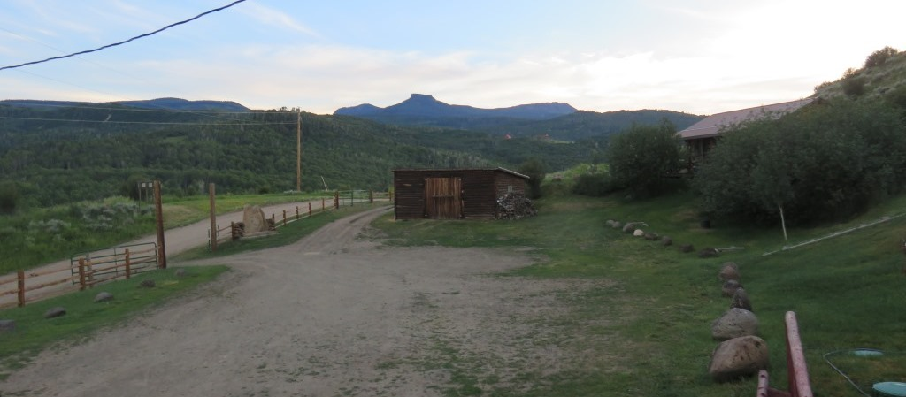
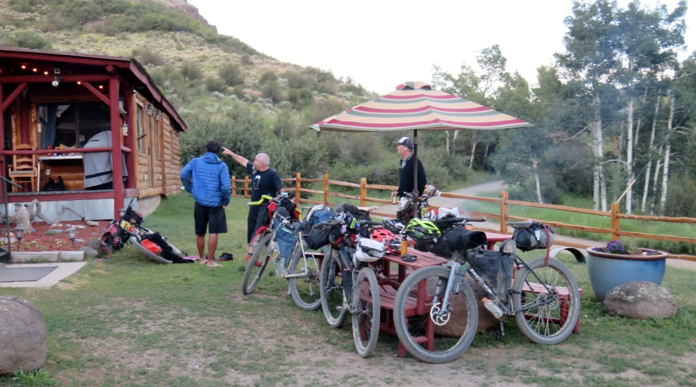
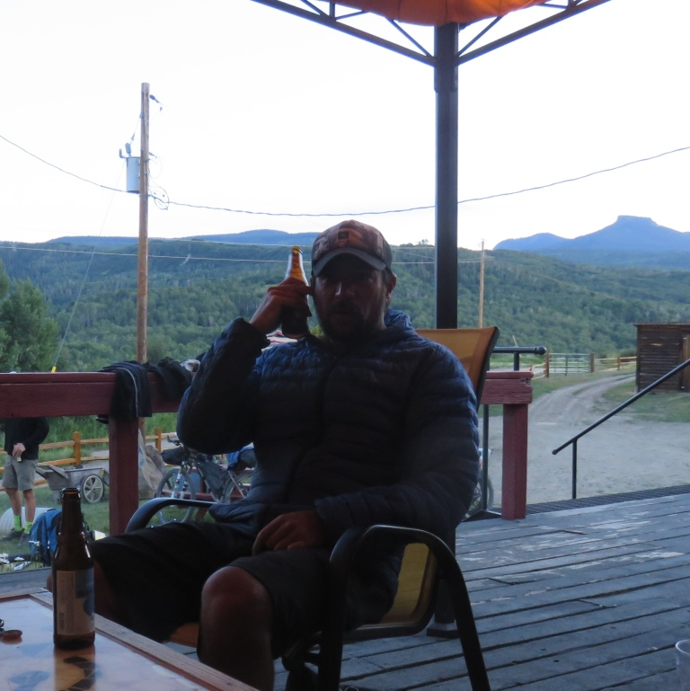

Wamsutter, WY appears to exist as a support station for the oil and gas industry and an exit on route 80. It was an important place for TD riders since it had all services in the middle of the Wyoming Great Basin. Leaving town and going south there were many trucks building, widening or maintaining the gravel road. They were also bringing equipment to the well sites. For almost 50 miles until I was close to the Little Snake River there were wells or stations every 1/2 mile.
Great Basin
360 view


Getting closer to the Colorado mountains

The ride had two reasonable hills in the mid-afternoon. After climbing up from 6,600 to 7,700 ft the road flattened out for 6 miles or so then went screaming downhill for 3 miles. I was tricked into thinking I'd be coasting into the border area by Slater. The road had a number of turns in it so you couldn't always see what was coming. Before the border Wyoming threw one more hill at me. It was only about a 10 minute hike up this 500 foot hill but I was just not anticipated it at this stage of the day. I knew I had some mountains to climb once I got into Colorado so this one caught me by surprise. From the top of that hill it was another steep downhill to the Little Snake River museum.

The women who ran the museum sent me down to the basement to help myself to various items in the fridge. I had a couple yogurts and at least 4 cheese sticks to go with 2 cans of Coke. Their break room was air conditioned so I stayed for a while.
Colorado = Green - 12 miles up Slater Creek

I went through a canyon at the bottom of Slater CreekThe first 5 miles along Slater Creek was a gradual climb. The surroundings were nice and green again.
 Looking back down Slater Creek
Looking back down Slater Creek
Lots of ups and down on the way to Brush Mountain Lodge.
 It was hard to get a sense of how bad this was going to be
It was hard to get a sense of how bad this was going to be
An hour to go before I rested
Brush Mountain Lodge
The lodge was hidden from the road as I approached. There was another house up higher on the hill behind the lodge that peaked out just before this. This was a fakeout. Once I came around the corner I was really excited to know my riding was thru for the day.

This was a day I had looked forward to the entire trip up until now. I didn't need to worry about tomorrow I had survived this beast of a ride through my birthday.

Before I could sit down I had been offered Lemonade and Cheeseburgers for my belly and ice for my knees.

Eric had arrived before me. Tom, Lynne and Rob arrived shortly after and Andrew was the last to arrive. I had ridden in the vicinity of these riders since before entering Wyoming.

Big crowd at Brush Mountain
AndrewDay 21 - Monday, June 29 - 82 miles - Wamsutter, WY to Brush Mountain Lodge
See full screen map To go places and do things that I've never done before – that’s what living is all about.Text by Jim O'Brien . Photographs by Jim O'BrienTD on Flickr.